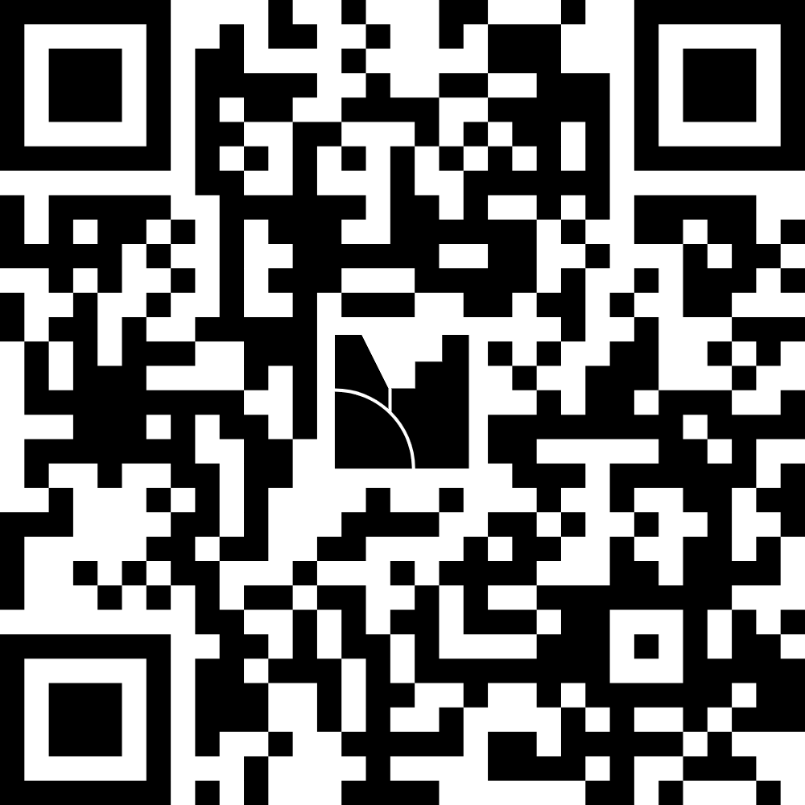

Speaker:
Narezi Febriansa
13 Maret 2026 | Pojok Statistik UBB
"Halo semuanya! Vibe check dulu nih, suaranya mana? Menjadi 'Agen Statistik' sekarang bukan cuma soal ngumpulin data, tapi gimana caranya data itu nggak berhenti di laci meja, tapi bisa nembus FYP TikTok/IG. Siap buat upgrade skill? Kita mulai."
Ayo keluarin HP kalian, scan QR Code di depan. Jujur aja, no cap.
Insight:
Rata-rata kita menghabiskan 7+ jam sehari di internet. Berapa detik mereka mau melihat data statistik kita kalau kemasannya membosankan?

Scan QR to Vote
Statistik itu sering dianggap ibarat NPC (Non-Playable Character) di dalam game—ada, tapi nggak dipedulikan.
Kita harus uninstall mindset itu. Di era informasi tanpa filter, memegang data valid ibarat punya cheat code menuju Sensus Ekonomi 2026.
Kalau 3 detik pertama nggak ada hook, jari otomatis swipe up.
Perhatian (attention) adalah mata uang baru yang bernilai raksasa.
Anak muda pakai TikTok/IG mencari "Visual Answer", bukan Google.
Grafik ngawur + Sound jedag-jedug + Emosi.
Jutaan Views 🔥
Metodologi ketat + Bahasa birokrasi kaku.
Ratusan Views 📉
Misi kita adalah MEREBUT KEMBALI narasi tersebut!
3 Detik Pertama!
Gunakan hook kreator: "POV: Kamu baru sadar ternyata banyak warkop baru di kotamu!"
Bawa Makro ke Mikro
Contoh SE2026: "Kita lagi mendata berapa banyak sih coffee shop tempat kalian nongkrong di Babel!"
Gunakan tren: Video GRWM siap-siap survei, atau fitur Green Screen tunjuk angka kaget.
Kalian memegang data resmi BPS Babel. Saat yang lain beropini, kalian punya fakta absolut.
Pakai Canva, CapCut, dan Gemini/ChatGPT untuk bantu bikin caption gaya Gen Z.
Data yang memicu emosi (kaget, bangga, validasi) adalah data yang di-share!
"Data tanpa cerita cuma angka di hardisk. Data dengan kreativitas mengubah dunia."
Mulai besok, bikin minimal 1 Story/Reels. Jangan lupa tag medsos resmi kita.